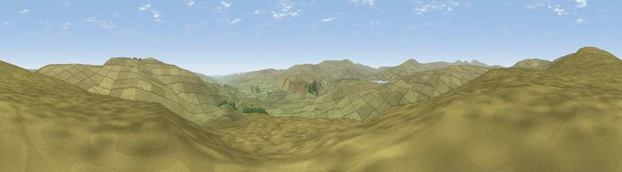

Viewpoint osmp1825151189
#16545 in England · top 47% of its area beats it · —The view, rendered

A 360° render of this exact spot computed from the terrain model, tree cover and land cover — summer colours, afternoon light, calibrated against photographs of famous viewpoints. Real trees, hedges and buildings will differ in detail.
The panorama
Grey silhouette: terrain skyline in each direction (720 bearings, Earth curvature and refraction included). Dashed green: skyline with trees (+15 m) and buildings (+8 m) as obstacles. Blue strip: how far the ground is visible on each bearing.
Where the view opens
Wedge length = distance to the farthest visible ground on that bearing (vegetation-aware). Rings at 10, 25 and 50 km.
What fills the view
99% grassland ·
Angular shares of the visible panorama (visual magnitude), not map area. Landscape diversity 0.02 (0–1 Shannon).
Key numbers
More beautiful places nearby
The staircase of upgrades: each row has a higher view potential than everything closer. Driving times are estimates from straight-line distance, calibrated against real road routing — check an actual route before setting out.
| Place | Direction | Drive | Score |
|---|---|---|---|
| Viewpoint near Ireshopeburn | NNW · 1 km | ~3 min | 59.6 |
| Viewpoint near Ireshopeburn | NNW · 1 km | ~3 min | 60.5 |
| Viewpoint near Wearhead | NNW · 3 km | ~7 min | 66.5 |
| Fendrith Hill | E · 4 km | ~9 min | 70.0 |
| Meldon Hill | WSW · 8 km | ~16 min | 70.4 |
| Dead Stones | NNW · 8 km | ~16 min | 72.8 |
| Viewpoint c10490_7651 | S · 9 km | ~17 min | 74.4 |
| Mickle Fell | SSW · 9 km | ~18 min | 75.8 |
54.69339, -2.25231 · source: osm peak · position refined by local search. Computed location — check access rights before visiting.